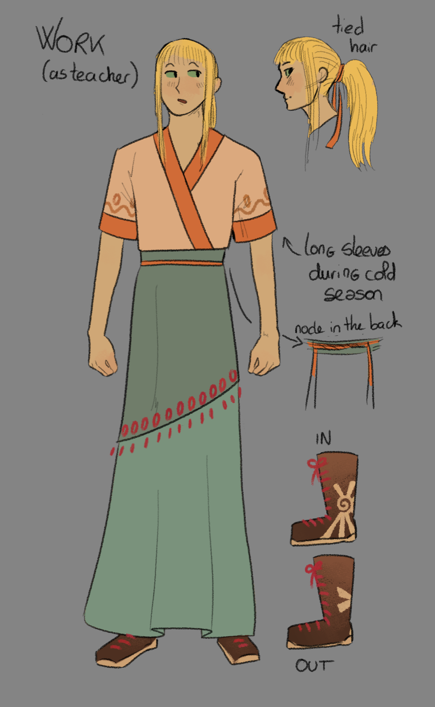
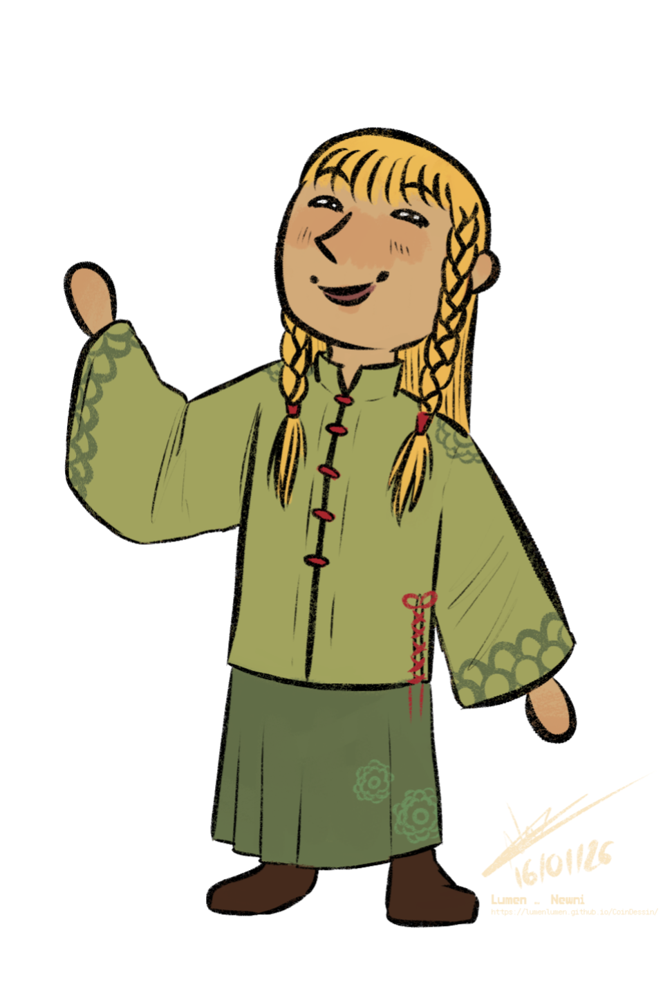
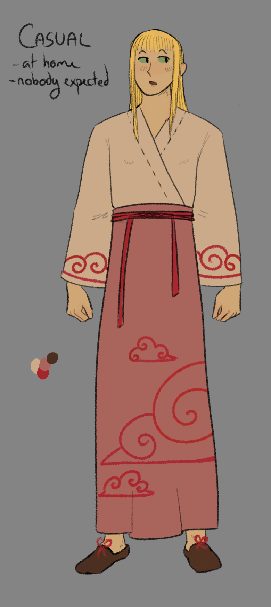
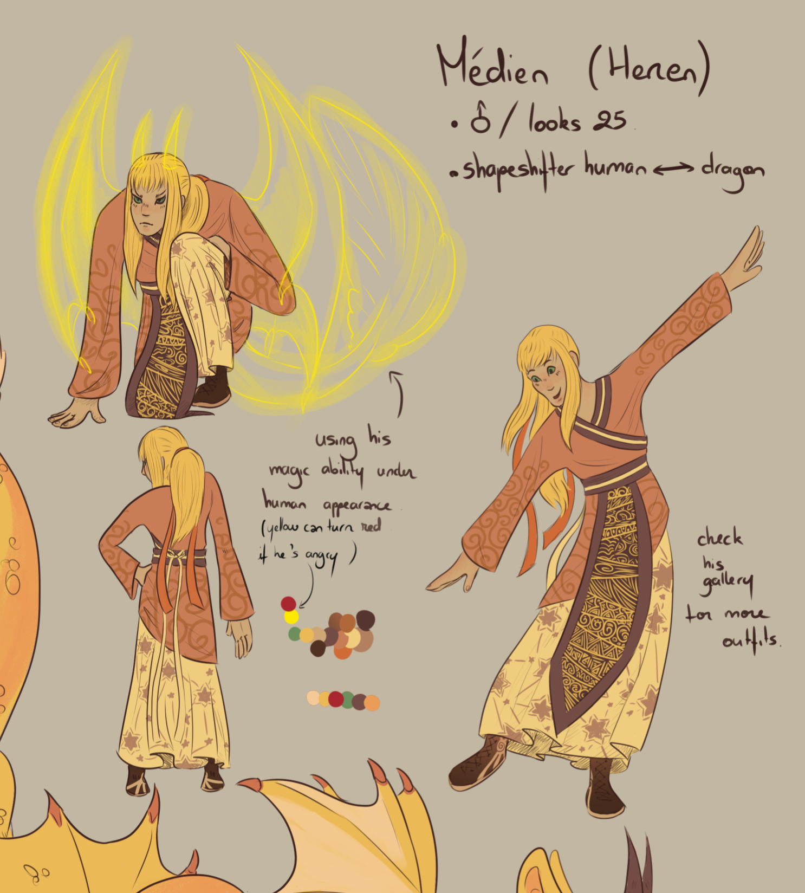
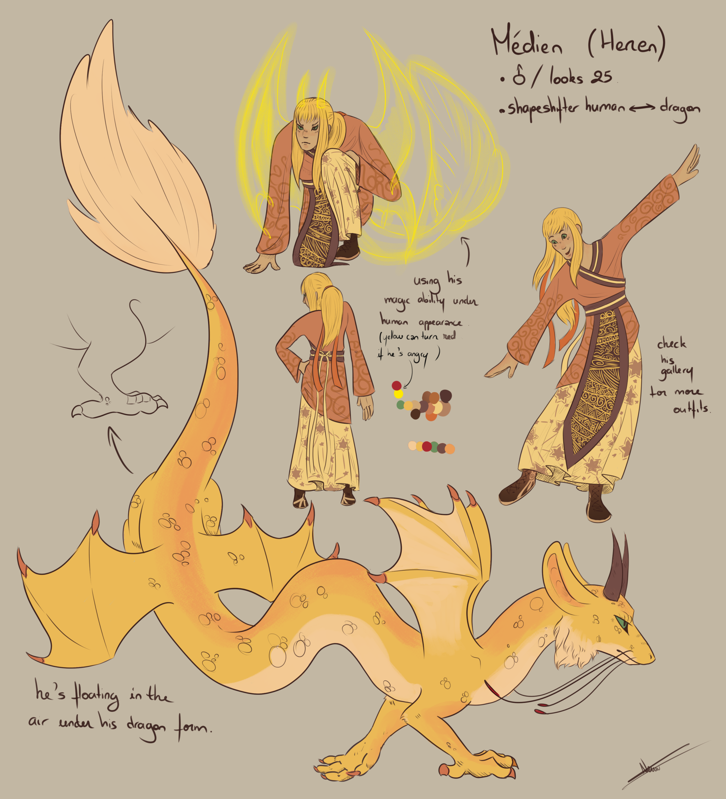

Made by YYGemini
Made by YYGemini
981 years old | 6'4" (human) / 39'4" (dragon)
Médien is a teacher at the orphanage, having previously worked as a shoemaker. He is also the protective dragon of Chapelle d’Orée, a fact he keeps completely hidden.
MAGIC
Médien is gifted with a powerful magic that he keeps concealed. He can trace golden lines around himself to draw shapes or symbols, using them notably to create seals. When he lets his magic run free, it turns bright red.
NOTES
- Médien appears to be a calm, collected, and friendly person. However, he is very reserved and rarely speaks about himself. He may intentionally remain vague or leave things unsaid because he is a very poor liar.
- He is rather anxious and takes his responsibilities very seriously. He occasionally smokes to calm his stress. He does not consume alcohol, as he cannot digest it.
- Médien gets sick often; he is sensitive to the cold and to germs.
- Médien enjoys company; he readily chats with people and has no trouble meeting new acquaintances. Nevertheless, he still needs moments of solitude and his little daily routines.
- He is highly knowledgeable in many fields, as his long life has given him the opportunity to experience many things. He sometimes struggles to tone down his intellect to avoid looking too suspicious.
- He does not handle physical contact well and can react abruptly if startled.
- Médien wishes to live as a human and hides his draconic form at all costs.
IDEAS
- Médien scaling a fish. He enjoys cooking and is good at it.
- Médien smoking by a window or sitting on some steps outside, watching the scenery. He avoids smoking in front of others.
- Médien and Zorigaitza over a drink, discussing the history of the city.
- Médien showing a few sewing tips to any child from the orphanage.
- Médien feasting together with his colleagues from the orphanage. Inhabitants of the herbalist shop can be present as well.
- Médien is sick. Linja, Buster, or Verveine are giving him a brew to help him recover.
- Médien, threatening, fiercely showing his fangs in his draconic form, letting his red magic escape all around him.
REFERENCES

Made by NewniTeacher outfit
This is the outfit Médien usually wears at the orphanage. His hairstyle can vary (hair clips, plaits, etc.), although he always ties his hair back. When it’s cold, he wears long sleeves and sometimes an extra layer.

Made by NewniDaily outfit
An outfit that can vary and change. He might wear make-up or change his hairstyle, depending on how much time he feels like spending getting ready. He enjoys looking his best when he has the time.

Made by NewniHome outfit
When Médien plans to spend a day in his slippers at home on his own, he wears this outfit. He doesn’t usually bother tying his hair back, although he does sometimes style it just for fun.
He doesn’t go out in public wearing this outfit, nor does he have guests round.

Made by NewniCraftman outfit
This is the outfit Médien wore when he was still a cobbler, six years ago. He no longer wears it today. Please do not draw him alongside any other character in this outfit, apart from Roseri, Meli, Malus, Avi, Zorigaitza or Thoo.

Made by NewniDragon
Médien is a dragon. His magic is golden and can turn red when he concentrates it or when he is angry. He can levitate in the air. His body is covered in scales, except for his beard and the tip of his tail.
Médien very rarely takes on this form, and even less so in front of others!
981 ans | 192 cm (humain) / 1200 cm (dragon)
Médien est professeur à l'orphelinat après avoir été cordonnier. Il est également le dragon protecteur de Chapelle d'Orée, ce qu'il cache complètement.
MAGIE
Médien est doué d'une puissante magie qu'il cache. Il peut tracer des lignes dorées autour de lui pour dessiner des formes ou des symboles. Il s'en sert notamment pour créer des sceaux. Lorsqu'il laisse libre cours à sa magie, elle devient rouge vif.
NOTES
- Médien est quelqu'un de calme, posé et sympathique en apparence. Il est cependant très réservé et parle peu de lui. Il peut volontairement rester vague ou laisser des non-dits à son sujet car il ment très mal.
- Il est plutôt anxieux et prend les responsabilités très à cœur. Il fume occasionnellement pour calmer son stress. Il ne consomme pas d'alcool, il ne le digère pas.
- Médien est souvent malade, il est sensible au froid et aux microbes.
- Médien aime la compagnie, il discute volontiers avec les gens et rencontre sans souci de nouvelles personnes. Il a malgré tout besoin de moments de solitude et de ses petites habitudes.
- Médien est très cultivé dans de nombreux domaines, sa longue vie lui a donné l'occasion d'expérimenter beaucoup de choses. Il a parfois du mal à baisser son niveau pour ne pas paraître trop louche.
- Il accepte mal les contacts physiques et peut avoir des réactions brusques s'il est surpris.
- Médien souhaite vivre comme un humain et il cache sa forme draconique à tout prix.
IDÉES
- Médien écaille un poisson. Il apprécie cuisiner et il le fait bien.
- Médien fume à une fenêtre ou assis sur des marches à l’extérieur, observant le paysage. Il évite de fumer devant les autres.
- Médien et Zorigaitza autour d’un verre en train de discuter de l’histoire de la ville.
- Médien montrant quelques astuces de couture à n’importe quel enfant de l’orphelinat.
- Médien et les collègues de l’orphelinat en train de festoyer ensemble. Les habitants de l’herboristerie peuvent être présents également.
- Médien est malade. Linja, Buster ou Verveine lui donnent un breuvage pour l’aider à se remettre.
- Médien, menaçant, montrant férocement ses crocs sous sa forme draconique, laissant échapper sa magie rouge tout autour de lui.
RÉFÉRENCES
Tenue de professeur
C'est la tenue que porte généralement Médien à l'orphelinat. Sa coiffure peut varier (pinces, tresses, ...), même s'il attache toujours ses cheveux. Lorsqu'il fait froid, il porte des manches longues et éventuellement un second vêtement.
Tenue quotidienne
Une tenue qui peut varier et changer. Il peut éventuellement porter du maquillage ou changer de coiffure, selon le temps qu'il a envie de passer à se préparer. Il apprécie se faire beau quand il a le temps.
Tenue casanière
Quand Médien a prévu de passer une journée en pantoufle seul chez lui, il porte cette tenue. Il ne prend généralement pas la peine de s'attacher les cheveux, même si cela arrive qu'il se coiffe pour le plaisir.
Il ne sort pas à l'extérieur avec ce vêtement ni ne reçoit d'invités.
Tenue d'artisan
Il s'agit de la tenue que portait Médien lorsqu'il était encore cordonnier, il y a six ans. Il ne la porte plus aujourd'hui. Merci de ne pas le dessiner en compagnie d'autre personnage en cette tenue sinon Roseri, Meli, Malus, Avi, Zorigaitza ou Thoo.
Dragon
Médien est un dragon. Sa magie est dorée et peut devenir rouge lorsqu'il la concentre ou lorsqu'il est énervé. Il peut léviter dans les airs. Son corps est couvert d'écailles à l'exception de sa barbe et de l'extrémité de sa queue.
Médien revêt très rarement cette apparence, et encore moins devant les autres !
Made by YYGemini
PLUS D'INFORMATIONS
TBD
CREDIT
Hover over the images to see the artist's name and link.
Original design by Newni.